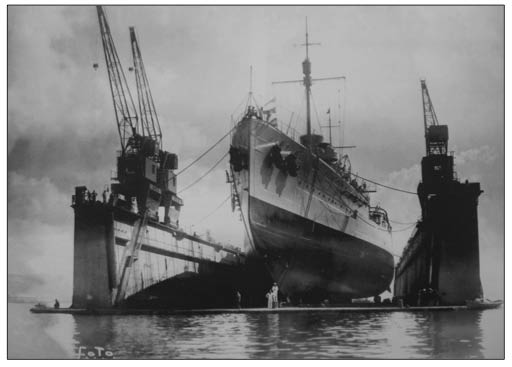
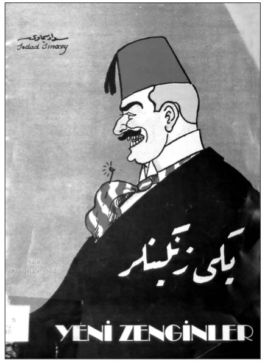
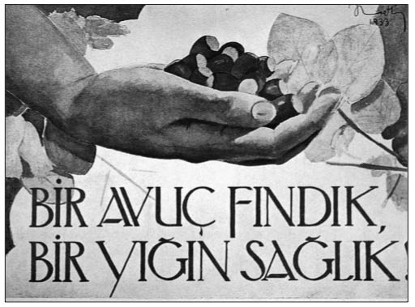

Y-Z
Yabancı Düşmanlığı (Uluslararası sermayeye karşı ilk tepki. Osmanlı İmparatorluğu’nun parçalanmaya yüz tuttuğu son dönemlerinde ortaya çıkan ve bütün kötülüklerin dışarıdan geldiği iddiasıyla izlenen politika): İttihatçıların 1914’ten itibaren “Millî İktisat” politikasına yönelmesi, Avrupa çevrelerinde kuşkuyla karşılanıyordu. Zaten savaş nedeniyle düşman devletlere ait bazı stratejik işletmelere el konulmuş, yabancı şirketlerin elinde olan limanlar ile Aydın, Kasaba, Suriye ve Mudanya demiryolları ve İstinye dokları sözleşme hükümlerine uygun olarak hükümetçe satın alınarak millî-leştirilmişti. Bu arada o güne kadar büyük ölçüde Yunan bandıralı gemilerin tekelinde olan iç deniz ticaretinin bundan böyle Osmanlı gemileriyle yapılması kararlaştırılmıştı. Savaş yıllarında, İttihat ve Terakki Bolu Heyet-i Merke-ziyesi, Fransız sermayesinin elinde bulunan Ereğli Kömür İşletmeleri’nin paylarını satın almak için bir şirket kurma girişiminde bulunmuşsa da, Almanlar daha hızlı davranarak 5 milyon frank tutarında Fransız hissesini elde etmişti.
Bütün bunların dışında, ticari imtiyazların kaldırılışı, yabancı şirketlerin denetim altına alınması, yabancı sermayeye millî sermayeyle ortaklık önerileri, “yabancı düşmanlığı” ya da o günkü deyimiyle “ecanibgürizlik” olarak nitelendiriliyordu. Üstelik bu görüş sadece düşman ülke vatandaşlarına karşı değil dost ülke vatandaşlarına karşı da kullanılıyordu. Yabancı düşmanlığı ithamlarını yanıtlamak yine Cavit Bey’e düştü.
“Gerçek anlamda milliyetperverlik ecnebi husumeti demektir; bizde ise ecnebi husumeti mevcut değildir ve hiçbir zaman da, memleketimizin en buhranlı zamanlarında bile, yani ecnebilerden şikâyet etmeye hakkımız olduğu zamanlarda yine milliyetperver değildik; şimdi yine bu suretle milliyetperver olmaklığımız için hiçbir sebep tasavvur etmiyorum”.
İttihatçıların ideologlarından Tekin Alp ise, İktisadiyat Mecmuası’nda “Ecnebi Sermayesine Karşı Siyaset-i İktisa-diyyemiz” başlıklı yazısında, Avrupa ülkelerinde Türkiye’de “ecanibgürizlik” baş gösterdiğine ilişkin koparılan fırtınanın gerçekle hiçbir ilişkisinin olmadığını, bunun Türklerin ulusal uyanışını çekemeyen çevrelerce çıkarıldığını ileri sürmekteydi. Alp, “Türkiye’de millî taassup veya ecanibgürizlik vardır” diyenlere hükümet programını incelemelerini öneriyor, bu haksız iddialara karşı da Babıâli’nin aktif bir propaganda yürütmesi gerektiğini söylüyordu. Ona göre, hükümet programında belirtildiği gibi, bundan böyle Osmanlı topraklarında faaliyette bulunacak girişimler herhangi bir engelle karşılaşmayacak ve millî sermayenin, millî teşebbüsün iştirakiyle yabancı sermayenin işi büyük ölçüde kolaylaşacaktı.
Yabancılara Türkçe Kullanma Zorunluluğu (Osmanlı’nın son döneminde yabancılara yönelik en önemli akım): İkinci Meşrutiyet yıllarında iktidara gelen bütün hükümetler, her fırsatta ticari imtiyazların kaldırılması konusunu gündeme getirmişler ve bu konuda yabancı ülkeleri iknaya çalışmışlardı. Bu çabalar sonucunda her ne kadar olumlu bir sonuç elde edilememişse de, Babıâli artık ticari imtiyazların kaldırılması gerektiğine inanıyordu. Sait Halim Paşa Kabinesi, Adliye Bakanı’nın görüşünü benimsedi ve 1 Ekim 1914 günlü iradeyle, Osmanlı topraklarında yaşayan yabancıların “ticari imtiyaz” diye adlandırılan tüm mali, iktisadi, adli ve idari ayrıcalıklarının bundan böyle kaldırıldığı ve yabancılarla ilişkilerin devletler hukuku ilkeleri ışığında düzenleneceği ilan edildi. 9 Eylül günü ticari imtiyazların kaldırılma kararı bir notayla ilgili devletlere iletildi. Sefaretler, ticari imtiyazların ikili anlaşmalara dayandığını ve bu nedenle tek taraflı olarak kaldırılamayacağını Babıâli’ye bildirerek kaldırma kararını protesto ettilerse de savaş koşulları İttihatçılara, fiili bir durum yaratmıştı. Hükümet, 1 Ekim’de bu kararı yürürlüğe koydu. 15 Ekim 1914 tarihli geçici bir yasayla da Osmanlı yasa ve tüzüklerinde ticari imtiyazlardan kaynaklanan tüm hükümlerin geçerliliklerini kaybettikleri açıklandı.
Daha sonra 8 Mart 1915 tarihinde çıkarılan kanunla da yabancıların Osmanlı topraklarındaki statüleri belirlendi. Bu arada Sait Halim Paşa hükümeti, 23 Mart 1916’da çıkardığı bir kanunla yabancı şirketlere Türkçe kullanma zorunluluğu getirdi. Demiryolları ve kamu yararına olan alanlarda faaliyet gösteren imtiyazlı şirketlerin işletme muamele ve haberleşmelerinde Türkçe kullanmaları gerekiyordu. Belirlenen süre zarfında söz konusu yükümlülükleri yerine getirmeyen şirketlere geçici olarak el koyma ve kanunun gereklerini uygulatma yetkisi hükümete aitti. Yabancı imtiyazlı şirketler, zorunlu hâller, teknik yazışmalar ve yabancı kuruluşlarla yazışmaların dışında Türkçe kullanmakla yükümlü kılındılar. Bu kanunla Türkçe kullanımı mecburi tutularak hem Osmanlı vatandaşlarına yeni bir istihdam alanı yaratılması, hem de bu çalışanlar vasıtasıyla söz konusu yabancı şirketlerin içeriden denetlenmesi amaçlanmıştı.
Yalova Operasyonu (Atatürk’ün Bayar’ı öne sürerek aşırı devletçi uygulamaları frenlediği operasyon): 1932’de kâğıt sanayiisini kimin kuracağı konusu, farklı iktisat modelini savunan iki grubu karşı karşıya getirdi. Himayeler sayesinde palazlanan ve liberalizmi savunan özel girişimci sınıf bir tarafta, devletin kuvvetlenmesini isteyen ve devletçiliği savunan memur sınıfı diğer taraftaydı. Yeni sanayiciler, Bayar’ın Genel Müdürlüğü’nü yaptığı İş Bankası etrafında toplanmıştı ve “Bireyin zenginleşmesiyle devletin de zenginleşeceğini” düşünen Mustafa Kemal Atatürk’ten de destek görüyorlardı. Devletin kuvvetlenmesini isteyen grubun başında ise Başbakan İsmet İnönü vardı. İnönü’nün, İş Bankası grubu hakkındaki düşüncesi ise olumsuzdu. Çünkü, İş Bankası grubunun adı “affairiste”e (çıkarcı) çıkmıştı ve bu grup ülkede yapılan her işten aslan payı almakla suçlanıyordu.
Dönemi değerlendiren kimi yazarlar, suyun başını tutan İş Bankası grubunun kalkınma yolunda önemli işler yaptığı konusunda, ülkenin bir an önce sanayileşmesini isteyen Atatürk’ü inandırmış olduğunu söylerler. Atatürk, Celal Bayar’ı Türkiye’nin en etkili iktisatçısı olarak görüyordu. Ne zaman İş Bankası’nın başarılı işlerinden söz açılsa, bankanın bütün başarılarını Celal Bayar’a bağlıyordu. Yakup Kadri’nin anlatımlarına göre Atatürk, bankanın kuruluşunun 10. yılı nedeniyle İstanbul’da Ertuğrul yatında yapılan bir törende, Bayar’ı göstererek, “Bilesiniz ki, Mahmut Celal Beyefendi Türkiye’nin en büyük iktisatçısı-dır” demiş ve çevrede bulunanların her birinin kalkarak onu ayrı ayrı tebrik etmelerini istemişti.
Tarihler, 1932’nin Eylül ayını gösteriyordu. Gazi Mustafa Kemal, Celal Bayar’ı öne sürerek hükümetin aşırı devletçi uygulamalarını frenlemek için Yalova’da bir operasyon gerçekleştirdi. Mustafa Kemal, Yalova’daydı. Yakup Kadri ve eşi Leman Karaosmanoğlu da, Gazi’nin yanındaydı. Akşamları Gazi’nin sofrasında diğer misafirlerle buluşulmaktaydı. Fakat o günlerde Yalova’nın havasında esrarlı bir gerginlik vardı. Celal Bayar ve İş Bankası İdare Meclisi Reisi Mahmut Bey (Siirt mebusu), sık sık Yalova’ya geliyorlar, Gazi ve çevresiyle yakın temaslarda bulunarak İstanbul’a geri dönüyorlardı. İsmet Paşa da zaman zaman Yalova’daki köşküne geliyordu, ancak Atatürk’e görünmek istemeyen bir ruh hâli içindeydi.
Hükümet çevrelerince devlet işletmesi olarak kurulmak istenen kâğıt endüstrisini kurmaya, İş Bankası’nın da aday olması iki grup arasında başından beri devam eden gerginliğe tuz biber ekti. Sonuçta, İktisat Vekili Mustafa Şeref iktisat politikasının temel sorunları üzerinde çıkan önemli görüş ayrılığında, kurban seçilen kişi olmaktan kendini kurtaramadı. Cumhurbaşkanı Atatürk, İş Bankası lehine tavır alınca, 1932 Eylül’ünde radikal devletçi İktisat Vekili Mustafa Şeref istifa etmek zorunda kaldı. Onun yerine birkaç gün sonra, Celal Bayar İktisat Vekilliği’ne atandı. Dünya ekonomisinde yaşanan bunalımın ve İsmet İnönü’nün de etkisiyle, devlet adına kâğıt fabrikası kurma görevi Celal Bayar’a verildi. Bayar, devletçilik politikasını, İktisat Vekili sıfatıyla yürütecekti. Evet, gerçekten de Yalova Operasyonu sermaye çevrelerini ferahlatan, devletçi gidişin “ölçüsüzlüklerinin” son bulacağını müjdeleyen bir gelişme olarak kabul edilir. Mustafa Kemal Paşa’nın girişimi ve talimatı ile kurulmuş olan özel girişim yanlısı İş Ban-kası’nın Umum Müdürü Celal Bayar’ın, devletçilik uygulamak üzere İktisat Vekaleti’ne getirilmesi, uygulamanın yönünü ve ölçüsünü önemli ölçüde belirledi. Devletçiliği daha geniş kapsamlı yorumlamaya ve uygulamaya eğilimli olan Başvekil İsmet Paşa ile CHF Genel Sekreteri Recep Bey gibi kişilerin yanında ve hatta onlara karşı, Celal Bey’in işbaşına getirilmesi Mustafa Kemal Paşa’nın bu alandaki tercihini yansıtması bakımından önemli ve anlamlıydı. Aslında Mustafa Kemal ve Celal Bayar için devletçi ekonomi politikası bir zorunluluğun ifadesiydi. Geri bir tarım toplumunu sanayileşme yoluna itecek özel girişim o sırada mevcut olmadığından, çaresiz temel altyapı ve sanayi tesislerini bizzat devlet üstlenerek yapmak zorundaydı. Bir başka deyişle bu durum, ihtiyaçtan kaynaklanan bir zorunluluğun ifadesiydi. Bir yıl kadar önce ifade edilseydi dikkate değer hiçbir yanı bulunamayacak olan bu görüşlerin, 1932 Eylül’ünde taşıdığı anlam herhangi bir yoruma ihtiyaç göstermeyecek kadar açıktı. Sonunda Sü-merbank’a bağlı olarak çalışacak olan fabrikanın temeli 1934’te atıldı. 1936’da SEKA’nın İzmit Fabrikası’nda Türkiye’nin ilk kâğıdı üretildi.
Yavuz Havuz Davası (Cumhuriyet’in ilk yolsuzluk olayı): Genç Türkiye Cumhuriyeti’nin elindeki en yeni, güçlü ve modern savaş gemisi Yavuz zırhlısıydı, ancak onarıma ihtiyacı vardı. Onarıma yönelik ilk girişimler 1924’te başladı. Hükümetin bu girişimlerini duyan Enver Paşa’nın eniştesi Ömer Nazım Bey, ihaleye girebilmek için Alman Blohm und Voss şirketinin temsilciliğini aldı. Nazım Bey, Trablusgarp’tan cephe arkadaşı Bilecik milletvekili Dr. Fikret Bey’e ortaklık teklif etti. Bu ikiliye birkaç ay sonra Cebelibereket (Osmaniye) Milletvekili İhsan Bey (Eryavuz) de katıldı. Onarım için öncelikle Yavuz’u taşıyabilecek kapasitede bir havuz gerekiyordu. Havuz alınması için Vikers Armstrong şirketiyle masaya oturuldu. Görüşmeler sürerken, yeni kurulan Denizcilik Bakanlığı’na getirilen İhsan Bey, tamir işini devraldı.
Bu arada, ilginç bir gelişme yaşanmış, tamir işini üzerine alan şirketin Türkiye temsilcileri, İsmet İnönü’nün ticaretle uğraşan kardeşi Rıza Temelli’ye ortaklık teklif etmişti. Sonunda değişiklikler 24 Ekim 1927’de bakanlar kuruluna geldi, ancak bazıları kabul edilmedi. Zaten kardeşine teklif götürülmesinden rahatsız olan İsmet Paşa, sözü edilen değişikliklerin devlet aleyhine olduğunu öne sürerek görüşmelerin devam ettirilmesini istedi. Bu, gerçekten kritik bir zamandı. Hükümet bir hafta sonra, 1 Kasım 1927’de istifa edecekti. İsmet Paşa, bunun son bakanlar kurulu toplantısı olduğunu söylemişti. Ayrıca Bahriye Ba-kanlığı’nın kaldırılmasının düşünüldüğü de biliniyordu. İhsan Bey, tüm bunlara rağmen, reddedilen değişiklikleri aynen muhafaza ederek anlaşmayı imzaladı.
Ertesi gün üçüncü İnönü hükümeti istifasını verdi ve aynı gün İsmet İnönü yeniden hükümeti kurmakla görevlendirildi. İhsan Bey, dördüncü İnönü hükümetinde yer bulamadığı gibi, Bahriye Bakanlığı da kaldırıldı. Sözleşmenin imzalandığını öğrenen İnönü, konuyu Mustafa Kemal’e açınca, İhsan Bey’i Yüce Divan’a götüren süreç de başlamış oldu. Komisyon’un ticaret hayatına atılmasının nedenlerine ilişkin sorusu karşısında sinirlenen İhsan Bey, “Bunu bana neden soruyorsunuz? Hepiniz, reisimiz başta olmak üzere, zenginleşmek lazımdır, demokrasi zenginliğe dayanır, demiyor muydunuz? Hepiniz aynı işlere girmediniz mi?” şeklinde yanıt verdi. Komisyon raporundaki iddiaları, İhsan Bey’i mahkemeye sevk etmek için yeterli gören Meclis, İhsan Bey’in dokunulmazlığını kaldırdı. İhsan Bey, tutuklanarak Cebeci Cezaevi’ne gönderildi. İstiklal Mahkemesi’nde 59 kişiye yolsuzluk ve rüşvetten ceza veren İhsan Bey, bu kez aynı suçlamayla sanık sandalyesine oturuyordu. Türkiye Cumhuriyeti’nin Yüce Divan’da görülen bu ilk davası 16 Nisan 1928’de sonuçlandı. Mahkeme İhsan Bey ile Ömer Nazım Bey ve Dr. Fikret Bey’i suçlu buldu. Yavuz zırhlısı ise, Haziran 1973’te Gölcük Tersanesi’nde yapılan törenden sonra donanmadan ayrıldı.

Yavuz Havuz Davası, Cumhuriyet’in ilk yolsuzluk olayıydı.
7 Eylül Kararları (Türkiye’nin Uluslararası Para Fonu (IMF)’na girmesine neden olan istikrar tedbiri): II. Dünya Savaşı sonrası beliren iki kutuplu dünyada Türkiye, tercih yapmak zorundaydı. Gelinen nokta, Türkiye’nin 1930’lu yıllardaki gibi devletçiliği uygulayamayacağını gösteriyordu. İlk barış kabinesi olarak bilinen Recep Peker hükümeti, 1946 Sanayi Planı’nı hazırlanmasından birkaç ay sonra rafa kaldırmak zorunda kaldı. Çünkü plan taslağı, Avrupa Kalkınma Programı’nın kapsamı içine alınmak isteğiyle Amerikalılara sunulmuş, ancak Amerikalılar bu talebi reddetmişlerdi. Daha sonra hazırlanan, “Vaner Planı” diye bilinen çalışma da Türkiye’nin iktisadi kalkınmada devlet eliyle sanayileşmeye ağırlık veren içeriği nedeniyle Amerikan hükümeti tarafından reddedildi. Bunun üzerine hükümet, 1948-1952 yılları arası için yaklaşık 4 milyar liralık yatırımdan söz eden Vaner Planı’nı bir kenara bırakarak, mütevazı hedefleri olan yeni bir beş yıllık program hazırladı. Türkiye’ye ABD kredisinin verilmesinin yegane koşulu, Türkiye’nin ekonomik olarak da dünya ekonomisine eklemlenme sürecine girmesi ve bunun gerekliliklerini yerine getirmesiydi. Gerekliliklerden biri ise Türkiye’nin IMF ve Dünya Bankası ile işbirliğine geçmesiydi. 7 Eylül 1946 tarihinde Türkiye, Cumhuriyet tarihinin ilk büyük devalüasyonuyla tanıştı. 7 Eylül Kararla-rı’yla Amerikan dolarının değeri 131 kuruştan 280 kuruşa çıktı. Devalüasyonla birlikte bütün ithal mallar pahalanırken Türkiye, Şubat 1947’de IMF ve Dünya Bankası’na üye oldu. Yapılan anlaşmalar gereği de Türkiye, Amerikan yardımlarını almaya hak kazandı.
Yeğen Yahya Demirel Olayı (Yolsuzluk olayı): Türk siyasetine damgasını vuran siyasetçi Demirel’in yeğeni ve işadamı Hacı Ali Demirel’in oğlu Yahya Demirel, 1975’te adını “Hayali Mobilya” olayıyla duyurmuştu. Yahya Demirel, kaliteli mobilya adı altında yurtdışına sunta ve adi tahta ihraç etmiş, bu işlem karşılığında hazineden 20 milyon lirayı aşan miktarda vergi iadesi almıştı. 1976’da Karadeniz Ereğlisi Sulh Ceza Mahkemesi hakkında tutuklama kararı verdi. Çok geçmeden Ereğli Cumhuriyet Sav-cılığı’na teslim oldu ve tutuklanarak cezaevine kondu. Bundan sonra yaşanan süreç ise tamamen “burası Türkiye” dedirtecek uygulamalarla doluydu. Öncelikle Zonguldak Ağır Ceza Mahkemesi’nde başlayan davada 10 ila 20 yıl arasında hapis isteniyordu. Ancak yeğen Demirel’in tutukluluğu fazla sürmedi ve kefaletle tahliye edildi. Vergi kaçırmaktan, 1 yıl 5 ay hapis cezasına çarptırıldı, cezanın Yargıtay tarafından onaylanması üzerine Cilvegözü Sınır Kapısı’ndan yurtdışına kaçarak İsviçre’ye yerleşti. 1981’de, “yurda dön” çağrılarına uymayınca Bakanlar Kurulu kararıyla vatandaşlıktan çıkarıldı. 6 yıl 3 ay sonra yurda döndü ve cezaevine girdi. Zonguldak Ağır Ceza Mahkemesi, Yahya Demirel’i 23 yıl 4 ay hapse mahküm etti. Ancak 1986’da Yargıtay, mahkeme kararını bozdu ve tahliye edildi. İki defada toplam 10 ay 16 gün cezaevinde kaldı. Cezaevinden çıkınca ilk işi gidip amcası Demirel’in elini öpmek oldu. Ertesi yıl, Hayali Mobilya İhracat Davası zaman aşımına uğradı. Peki, gelişmeler burada bitti mi?
Hayır. 1990’lı yılların sonuna kadar Yeğen Yahya Demirel, Türkiye’nin en önemli gündem maddesi oldu. 2000’li yılların başında bir başka yeğen Demirel sahneye çıktı.
Yeni Zenginler (Sedat Simavi’nin 1918’de çıkardığı karikatür albümü): Türkiye’de “zengin yaratma” süreci, I. Dünya Savaşı yıllarına kadar uzanır. Savaş süresince gerek devlet eliyle, gerekse kıtlığın yol açtığı karaborsa yoluyla bazı kesimlere ve partinin yandaşlarına büyük servetler kazandırılıyordu. Aslında bu yaşananlar, “devlet eliyle” değil de, “parti eliyle” millî burjuvazi yaratma politikasının sonucuydu. Politikayı uygulama görevi İaşe-i Umumiye Nazırı (Gıda Bakanı) Kara Kemal Bey ile Askerî Levazım Başkanı Topal İsmail Hakkı Paşa’ya düşmüştü. Bu dönemde bulgur krallarından, pirinç, yağ ve şeker krallarına kadar savaş zengini bir zümre oluşturuldu. Tüketiciler, adi mallar için fahiş fiyatlar ödeyerek yeni savaş vurguncuları sınıfının zenginleşmesini sağlıyorlardı. “332 (1916) tüccarı” diye anılan bu grup yaptığı vurgunlarla nam salmıştı. Bu yeni zenginlerin durumu döneme ilişkin karikatürlere de yansıdı. Sedat Simavi’nin 1918’in Eylül ayında çıkardığı Yeni Zenginler isimli karikatür albümünde iki tema ağırlık kazanmıştı. Birincisi, “Yeni Zenginler”in barışa karşı oluşlarıydı. Diğeri de ilk fırsatta paralarıyla yurtdışına kaçma istekleriydi. Albüm kapağındaki resim ise II. Dünya Savaşı sırasında ortaya çıkan “Hacı Ağa” tipini andırıyordu.

Sedat Simavi’nin 1918’de çıkardığı Yeni Zenginler isimli karikatür albümünün kapağındaki resim fesi dışında, altın dişleriyle II. Dünya Savaşı sırasında ortaya çıkan ‘Hacı Ağa’ tipini andırıyordu.
Yerli Malı Kampanyaları (Dışa karşı savaşın silah dışında başka araçlarla da yürütülebileceği düşüncesi): Günümüzde yerli malı kullanma fikri, genellikle uluslararası sorunlar gündeme geldiğinde hatırlanıyor ve ülke boykotları dalga dalga yayılıyor. Peki, bu iş ilk olarak ne zaman başladı? Türkiye’de yerli malı kullanma fikri, ilk kez 1908’deki “Fes Boykotu”yla gündeme geldi. Avusturya, Berlin Anlaşması’yla Bosna-Hersek’i yönetme hakkını elde etmiş, Bulgaristan da özerk bir prenslik olmuştu. Buralar yine de hukuken Osmanlı toprağıydı. Ancak II. Meşrutiyet’in ilanı üzerine bu bölgelerin Osmanlı Meclisi’nde temsil edileceği kaygısıyla Avusturya, hukuken Osmanlı’nın denetiminde olan Bosna-Hersek ve Bulgaristan’a ait toprakları ilhak kararı aldı. Osmanlı’nın verdiği notalar da sonuçsuz kalınca, Avusturya karşıtı gösteriler başladı. Gösteriler, Avusturya ve Bulgaristan mallarına karşı boykota dönüştü. Avusturya’dan ithal edilmekte olan fes ile simgesini bulan boykot kısa sürede yayıldı. Avusturya’dan ithal edilen feslerin giyilmemesi için kampanya açıldı. “Serpuş-ı milli” adı altında piyasaya yeni bir fes verildi. Batı basınının “Viyana kuşatmasından daha etkili oldu” diye tanımladığı boykottan Osmanlı’ya mal üreten fabrikalarda çalışan binlerce aile etkilendi. İflaslar ve işyeri kapatmalar çığ gibi büyüdü. Fes Boykotu, Osmanlı’da ulusal bilincin oluşmasında kitle hareketinin önemini ortaya koydu. Bundan böyle dışa karşı savaşın silah dışında başka araçlarla da yürütülebileceği düşüncesi toplumda oluşmaya başladı.
Yerli malı kullanma kampanyaları, Cumhuriyet döneminde bir kez daha gündeme geldi.
Genç Cumhuriyet’te, iktisadi milliyetçiliğe dayanan “Millî İktisat” politikasına olumlu bakılıyordu ve ekonomi “millîleştirilerek”, Müslüman-Türk zengin sınıfı yaratılması amaçlanıyordu. Yerli malı kampanyaları bu amaç için kullanılmaya başlandı. Yerli malı kullanımını teşvik amacıyla düzenlenen yerli mallar haftası ilk kez, 4 Nisan 1929 günü kutlandı. 11 Ağustos’ta ise, “Türk Yerli Mallar Sergisi”, İstanbul’da Galatasaray Lisesi’nde açıldı.
Türkiye, 1929 Dünya Ekonomik Krizi’nin patlak vermesiyle, ithalatı ihracatından fazla olduğu için birtakım özendirici tedbirlere başvurmak zorunda kaldı. Günün sözü “tasarruf”tu ve Taksim Meydanı’nda yerli malı kullanma mitingleri yapılmaya başlandı. 25 Aralık, İş Bankası tarafından “Tasarruf Günü” ilan edildi. Tasarrufun simge-siyse İş Bankası’nın “kumbaraları” oldu. Kampanya kapsamında çocuklara yerli malı giymenin ve kullanmanın erdemi şiirlerle öğretiliyordu:
Yerli malı yiyeceksin
Ben Türküm demek için
Böyle vazifeler var
Az olsa bile paran
Dolmalıdır kumbaran
İşte ancak o zaman
Yurda neşeler dolar
Bu dönem, yerli malı kampanyalarını gerçekleştiren derneklerin başında, Millî İktisat ve Tasarruf Cemiyeti geliyordu. Dernek, halkı gereksiz harcamalardan ve ithal mallarından uzak durmaya teşvik etmek için bizzat, Cumhurbaşkanı’nın girişimleriyle ve onun himayesinde, kurulmuştu. TBMM Reisi Kazım Özalp liderliğinde, milletvekilleri, banka ve bazı kurum müdürleri tarafından kurulan MİTC, amaçlarını gerçekleştirmek üzere kurulduğu andan itibaren çok yoğun bir çalışma programı yürüttü ve kamuoyuna yönelik birçok kampanyaya girişti. Sergiler, seminerler, mitingler, yılda bir kez yapılan (12-19 Aralık) “Tasarruf ve Yerli Mallar Haftası”, tasarrufun önemini belirtmeye yönelik eğitim kampanyaları, hep bu amaç çerçevesinde kullanıldı. Bu arada 1932’de ilk dünya güzeli seçilen Keriman Halis de yerli malı kampanyalarına katılan ilk güzelimiz oldu. 1932’de İktisat ve Tasarruf dergisi Keriman Halis’in güzel oluşunu Türk üzümü, Türk fındığı, Türk lokumu yemesine bağlamıştı. Dergi, Eylül 1932 tarihindeki kapağında bu konuyu işledi. TBMM Başkanı Kazım Paşa, Yerli Mallar Sergisi’nde Türk güzelinin Belçika’da giydiği tuvaletin milli kumaştan yapıldığını söylemiş ve yarışmanın kazanılmasında bu faktörün etkili olduğunu belirtmişti.
1980’li yıllarda ekonominin dışa açılmasıyla birlikte yurda ithal mallar akın edince, yerli malı kampanyaları tarihe karıştı.

Yerli malı kullanma fikri, ilk kez 1908’deki “Fes Boykotu”yla gündeme geldi. 1930’larda Millî İktisat ve Tasarruf Cemiyeti, yerli malı kampanyaları düzenledi.
Yerli Walesa (Sendikacı Şemsi Denizer’e işçilerin taktığı ad): Turgut Özal’ın Cumhurbaşkanlığı, Yıldırım Akbulut’un Başbakanlığı döneminde, TTK ve MTA’da çalışan 48 bin işçinin toplu sözleşme görüşmeleri uyuşmazlıkla sonuçlanınca, Şemsi Denizer’in başkanı olduğu Genel Maden-İş, eylemli grev başlattı. Özal’ın etkisiyle hükümet, TTK’ya bağlı madenlerin zaten zararda olduğunu belirterek, kapatılmasını savunuyordu. Hükümetin sendikayla uzlaşmak yerine, ocakları kapatma niyetini gündemde tutması üzerine Denizer ve arkadaşları, Zonguldak halkının da aktif katılımıyla, maden işçilerini Ankara’ya yürütme kararı verdi. Yaklaşık 100 bin kişi, 4 Ocak 1991 sabahı Zonguldak’tan yola çıktı. İşçilerin önü Mengen-Eski-çağ arasında jandarma barikatı ile kesildi. Özal’ın karşı çıkmasına rağmen Başbakan Akbulut, sendika ile diyalog başlattı. Bu görüşmeler sonucunda işçiler Zonguldak’a dönerken, Denizer ve yöneticiler Ankara’ya görüşmeye gitti. İşçileri ve Zonguldak halkını yönlendiren Şemsi Deni-zer’e, Polonya’da önderlik ettiği grevlerle rejimi değiştiren daha sonra Cumhurbaşkanı olan Dayanışma Sendikası lideri Lech Walesa’dan esinlenen işçilerce “Yerli Walesa” lakabı takıldı. Bu yürüyüş ve eylem sırasında Özal aleyhine gösteri yapan işçiler, “Çankaya’nın şişmanı, işçi düşmanı” sloganları attı. İşçilere “Canlarım” diye hitap eden Deni-zer’e ise işçiler, “Başkan seninle ölüme de gideriz” diye destek verdi. Akbulut’un da çabasıyla, maden işçilerinin toplu sözleşmesi imzalandı
Yetiş Elmor (Orhan Büyükdoğan’ın yarattığı ECA’nın ünlü kahramanı Bay Elmor): ECA, Ekrem ve Cahit Elginkan kardeşlerin, babaları Ahmet’in adının baş harfini de katarak temellerini 1950’lerde oluşturdukları bir markadır. Bugün şirket ailenin hiçbir varisi olmadan, El-ginkan Vakfı tarafından yaşatılıyor. Küçük kardeş Cahit Elginkan, 1965’te bir deniz kazasında öldü. Şirkette her zaman başı çeken Ağabey Ekrem Elginkan 1999’da öldüğünde Elginkan topluluğu 20 şirkete sahip büyük bir kuruluştu. Elginkanlar her zaman kapalı bir kutu gibiydi. Şirketin unutulmaz bir Bay Elmor’u vardı. Ekrem Elginkan yurtdışında gördüğü bir çizgi filmden esinlenerek Bay Elmor karakterini çizdirmişti. Aslında Elmor, ECA’nın satış ve pazarlama şirketiydi. Herkesin yardımına koşan ve bütün tesisat işlerini halleden Bay Elmor televizyonlarda ve sinemalarda o yılların izlenme rekorlarını kırdı. Elmor, reklamda tesisatçı, öğretmen gibi değişik kılıklara girerek mesajlar veriyordu. Bu aynı zamanda ilk özgün müzikli, animasyonlu TV reklam filmiydi ve 1974-1975’te yayımlandı. Müziğini Selmi Andak hazırlamıştı. Elmor karakteri o kadar popüler oldu ki artık maçlarda gol atamayan takımın taraftarları “Yetiş Elmor” diye tezahürat yapıyordu. Ekrem Bey, Elmor markasının ECA’nın önüne geçtiğini düşünerek reklamı yayından çekti.
Yetmiş Sente Muhtaç Olmak: (Bkz. Demirel Üslubu).
24 Ocak Kararları (1980’de uygulanmaya başlanan istikrar tedbirlerinin genel adı): Bu kararlarla Türkiye, bir daha hiç kapanmamacasına kapılarını dış dünyaya açtı. Kararlar, 1980 öncesinde dünya ekonomilerinde güçlenen, uluslararası piyasalarda bütünleşmeye yönelik, özel teşebbüsün itici gücünü ön plana çıkaran liberal politikalarla paralellik gösterir. 1979’da Türkiye’de yaşanan ekonomik bunalım, yeni kararların alınmasını zorunlu hâle getirmişti. Buna çare olarak dönemin Başbakanı Süleyman Demirel, Başbakanlık Müsteşarlığı’na Turgut Özal’ı getirerek istikrar programını hazırlamakla görevlendirdi. Ülkenin geleceğini tehdit eden boyutlara ulaşan sorunları çözmek ve özellikle fiyat istikrarını sağlayarak enflasyonist süreci kontrol altına alabilmek; ödemeler dengesi, üretim ve tüketim darboğazlarını giderebilmek ve ekonomiyi kendi kendini besleyen bir büyümeye ve yapıya kavuşturabilmek amacıyla bir dizi ekonomik istikrar tedbiri alındı. Hükümetin “Ekonomik Önlemler Paketi” toplumda soğuk duş etkisi yarattı. 47 lira olan ABD doları 70 liraya çıkarken KİT ürünlerine yüzde 300-400’ü bulan zamlar yapıldı.
Kararlarla, Türk ekonomisinde köklü yapısal değişikliklere gidildi. İstikrar kararlarının başarıyla uygulanabilmesi için izlenen çeşitli politikaları beş ana başlık altında toplamak mümkündü: Ekonomide büyüme dinamiklerine zarar vermeden enflasyon oranının kalıcı bir şekilde düşürülmesi; ithal ikameci modelin terk edilerek dışa dönük ve ihracata dayalı bir büyüme modelinin kurulması, bu çerçevede ihracat teşviklerinin ve sübvansiyonlarının sağlanması ve ithalat liberalizasyonunun gerçekleştirilmesi; fi-nansal liberalizasyonun sağlanması; yabancı sermaye hareketlerinin liberalizasyonu ve bu çerçevede döviz kuru politikasının değiştirilerek Türk lirasının konvertibilitesi-nin sağlanması ve ekonomide kamunun etkinliğinin azaltılarak özelleştirme çalışmalarına hız verilmesi. Ekonomik önlemler paketi için Başbakan Demirel, “Devalüasyon, enflasyona yol açmayacaktır. Hedef durmuş olan ekonomiyi harekete geçirmek ve Türkiye’yi karaborsa ülkesi olmaktan kurtarmaktır” derken, CHP Genel Başkanı Ecevit ise, bu modelin parlamenter demokrasiyle birlikte yürütülmesinin mümkün olmadığını ileri sürüyordu: “Ekonomi, hatta devlet büyük çıkar çevrelerine teslim edilmiştir. Hükümet modası geçmiş bir Güney Amerika modelini, üstelik daha sakıncalı ölçülerle Türkiye’de uygulamak istiyor.” MSP Genel Başkanı Erbakan da kararların, “Ekonominin gereği değil, IMF’nin emri” olduğunu söylüyordu.
Yollar Kralı Menderes (Eski Başbakan Menderes’e yapılan bir yakıştırma): 1950’lerde dünyada yeni bir düzen kuruluyordu. Artık gelişmek ve büyümek isteyen Türkiye’yi bu yeni dünya düzenine göre şekillendirecek olan da Demokrat Parti (DP)’ydi. Cumhuriyet’in kuruluşundan bu yana iktidarda olan CHP, 1950 Seçimleri’nde ilk kez muhalefete düşerek iktidarını DP’ye kaptırmıştı. Halk, DP’yi yoklukların sonu, özgürlüklerin başlangıcı olarak görüyordu. DP lideri ve Başbakan Adnan Menderes, iktidarı döneminde “Yollar Kralı” olarak anılıyordu. Onun bu şekilde anılmasının nedeni tabii ki, karayollarıy-dı. Karayolları, 1950’ye kadar uygulanan ulaşım politikalarında demiryollarını besleyecek, bütünleyecek bir sistem olarak düşünülmüştü. Ancak bu sistemin geliştirilmesi gereken bir dönemde, Marshall yardımlarının da etkisiyle demiryolları âdeta yok sayılarak, karayolu yapımına başlandı. İzlenen karayolu politikasını 1947’de Amerikan Federal Yollar İdaresi Genel Müdür Yardımcısı Hilts’in hazırlamış olduğu rapor belirledi. Hilts’in önerileri doğrultusunda hazırlanan ve dokuz yılda tamamlanması öngörülen yol programı, Bakanlar Kurulu tarafından 1948’de onaylandı. Programın uygulanması 1950’de kurulan Karayolları Genel Müdürlüğü’ne bırakıldı. Marshall Yardımı kapsamında sağlanan iş makineleriyle Türkiye’de hummalı bir karayolu inşaatına başlandı. Karayollarını geliştirmeye yönelik çabalar yadsınamaz, ancak izlenen karayolları politikası, demiryolları politikasıyla birlikte değil, tek başına üretilmiş ve yürütülmüştü. Dolayısıyla iki ulaştırma ağının ilişkilendirilmesi gerekirken, ulaştırma alt sistemleri arasında koordinasyon sağlanamadığı için günümüze kadar devam eden, ülke gerçeklerine uymayan plansız bir karayolu siyaseti güdülmüş oldu.